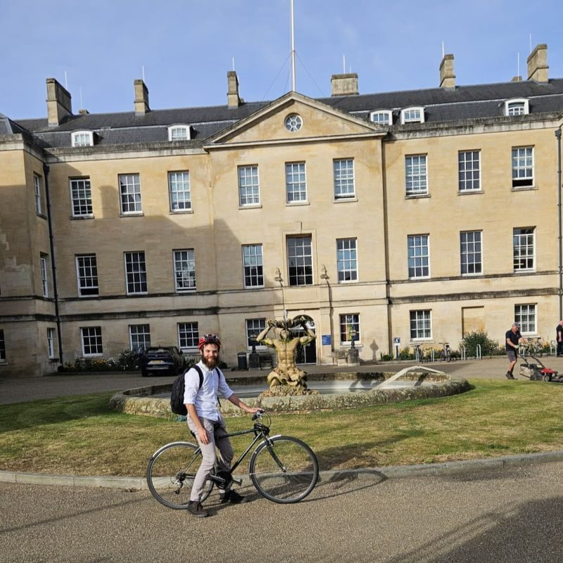

I teach choice modelling, survey design and data collection at Leeds and on short courses for researchers and practitioners.
University modules
PIED5780 · Data Collection in Political Science
University of Leeds
TRAN5282M · Choice Modelling and Stated Preference Survey Design
University of Leeds
LUBS1270 · Statistics for Business and Economics
Leeds University Business School
Short courses
Choice modelling short courses
Choice Modelling Centre, University of Leeds
Includes my lecture on psychological choice modelling (new in 2026)
Understanding and predicting choice behaviour in health
Health Economics Research Centre, University of Oxford
Guest lecture on model averaging

Oxford
Teaching resources
Apollo choice modelling package for R
I implemented the decision field theory models (120,000+ downloads)
Simulating choice behaviour using R: what does my model actually capture?
Overview and tutorial talks (10) on the Research page →
Supervising PhD and MSc students is a big part of my teaching too. See Supervision.